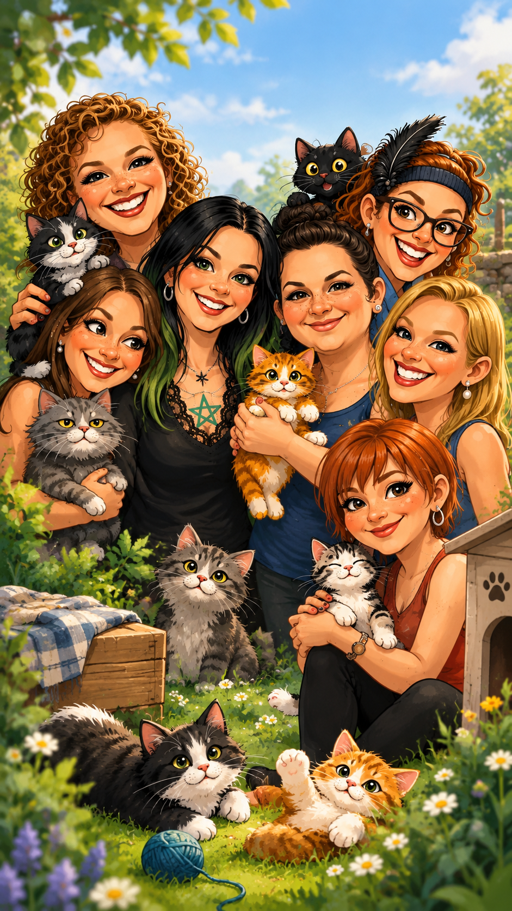
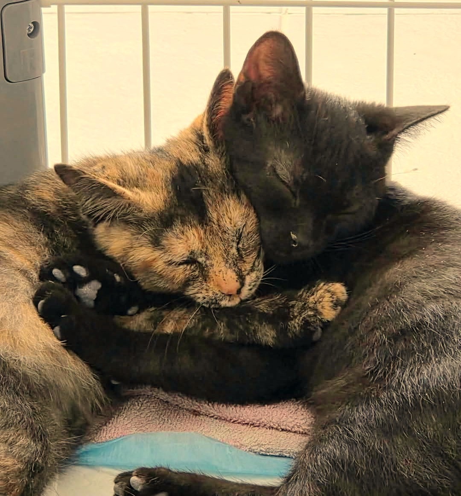

Soutien financier
Eure · Beuzeville / Pont-Audemer
Chats sans Familles
Sauver les chats errants, les soigner, les stériliser et les accompagner vers une famille.
Les annonces d'adoption et la vie de l'association sont principalement partagées sur Facebook.

Quelques mots
Au plus près
des chats errants.
Créée le 9 novembre 2015, Chats sans Familles est une association à but non lucratif qui sauve les chats errants du secteur de Beuzeville et de Pont-Audemer, dans l'Eure.
Elle leur apporte les premiers soins vétérinaires, les fait stériliser, puis les place en famille d'accueil avant de les faire adopter.
Son souhait : qu'ils puissent vivre leur vie dans la joie et en bonne santé.
Prendre contact
Identifiant RNA : W272002242
Faire une rencontre
Un compagnon
vous attend peut-être.
Les chats à adopter sont présentés principalement sur la page Facebook de l'association. Consultez-la pour découvrir les annonces disponibles.
Chaque geste compte
Envie de nous aider ?
Soutenir l'association financièrement ou en nature.
Dans la presse
Ils parlent de nous.
Un article de presse consacré à l'association.
Restons en lien
Une question ?
Contactez-nous.
Nos coordonnées